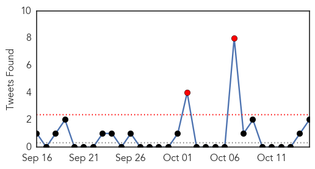
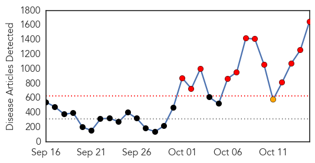
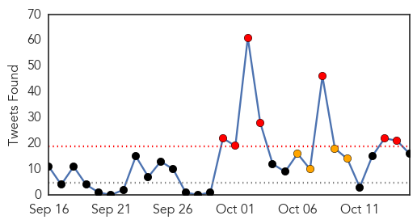

Unknown
30-Day Web Trend
0 alerts, 0 warnings

30-Day Twitter Trend
1 alerts, 0 warnings

Article Locations

Article Confidences
Top Articles:
- 0.980
- Fourth case of enterovirus confirmed
- 0.973
- Flu season could be harsher this year, experts say
- 0.972
- Get Healthy Carson City: It’s time to drive through to combat the flu
- 0.956
- Dr. Oz: Enterovirus killed two children and Martina McBride's healthy cookbook
- 0.942
- Virus is no reason for panic, medical officials say
- 0.921
- Arkansas delaying community flu shot clinics
- 0.917
- Chicago Tribune
- 0.917
- Chicago Tribune
- 0.917
- Chicago Tribune
- 0.917
- Chicago Tribune
- 0.917
- Chicago Tribune
- 0.917
- Chicago Tribune
- 0.917
- Chicago Tribune
- 0.917
- Chicago Tribune
- 0.917
- Chicago Tribune
- 0.917
- Chicago Tribune
- 0.917
- Chicago Tribune
- 0.917
- Chicago Tribune
- 0.917
- Chicago Tribune
- 0.917
- Chicago Tribune
- 0.897
- Health officials probing death of Arizona boy for possible enterovirus
- 0.867
- Rising health concerns of IDPs
- 0.866
- Obama promises more aggressive response to Ebola fears in United States
- 0.866
- UAE says isolates passenger from Liberia for Ebola checks
- 0.848
- 65 villagers fall ill, doc blames contaminated water supply
- 0.787
- West Milford takes enterovirus precautions due to suspected, unconfirmed case
- 0.783
- News, Weather, Sports, Breaking News
- 0.756
- HealthCare Partners Nevada to Host Flu Shot Clini
- 0.715
- Tuberculosis cluster: Torres Strait islanders 'kept in the dark' about Yam Island cases
- 0.698
- Three million Europeans catch infections in hospital annually
- 0.695
- Bluetongue Persisting in Balkans, Greece
- 0.676
- Student's reported illness prompts Peoria school cleaning
- 0.657
- Symptoms, Treatment and Prevention
- 0.650
- Koppel and Gordon: Learn, don’t blame, after Dallas hospital’s Ebola diagnostic failure
- 0.646
- Update: Students, Faculty Tested for TB at Thaxton ES
- 0.635
- AIDS scientists optimistic of AIDS cure, for some
- 0.622
- Adena focuses on hand hygiene to protect staff, patients
- 0.621
- Bohol Earthquake: One year on - Philippines
- 0.617
- World's first malaria vaccine may hit markets by 2015
- 0.588
- Pak key to anti-polio campaign: WHO
- 0.579
- Sunday Morning News: State Spending Millions On Ebola Defense
- 0.570
- WCAX.COM Local Vermont News, Weather and Sports-
- 0.560
- Assessing BVD risk
- 0.559
- MPI releases list of potential food poisoning sources
- 0.559
- MPI releases list of potential food poisoning sources
- 0.552
- Test results into gastro bug revealed
- 0.551
- Government Places Andalusia in Bluetongue Lock Down
- 0.546
- Experts question new TB test, say could lead to drug resistance
- 0.535
- Scientists say baby born with dreaded HIV ailment miraculously cured
- 0.508
- Orlando, FL Residents Suffering from Gum Disease Are Encouraged to Seek Treatment through Laser Gum Surgery with Drs. Richard Chace, Jr., Rodney Horvat and Scott G. Cohen
Showing top 50 articles...
Top Tweets:
- 0.647
- Case numbers refer to the number of people who have been confirmed to have EV-D68 infection.
- 0.606
- siento que soy 24/7,Necesito parar e irme de vaca de la uni, del trabajo y de las responsabilidades.. Excepto de Mahya no pudiese soportarlo
- 0.558
- Desalojan a vendedores ubicados en los alrededores del Hospital de Clínicas: Entre la mañana de ayer martes ... http://t.co/JkUgcQKptO
- 0.543
- .@itsmepanda1 Flu activity often begins increasing in Oct, peaking between Dec. & Feb. Getting a flu vax before flu activity begins is best
Ebola
30-Day Web Trend
12 alerts, 1 warnings

30-Day Twitter Trend
4 alerts, 8 warnings

Article Locations

Article Confidences

Top Articles:
- 1.000
- Ohio Dept. of Health: Texas health worker with Ebola visited Akron area
- 1.000
- Ebola outbreak, treatment, prevention
- 1.000
- Ebola In-Depth: #FactsNotFear
- 1.000
- Nurses group slams Dallas hospital for sloppy Ebola care
- 1.000
- Ebola forecast: Grim
- 1.000
- 10 things every Hoosier should know about Ebola
- 1.000
- Obama cancels trip, meets officials after second Ebola case confirmed in Texas
- 1.000
- WHO says 10,000 new Ebola cases likely by December
- 1.000
- Worst Ebola outbreak on record
- 1.000
- Worst Ebola outbreak on record tests global response
- 1.000
- Dallas nurse with Ebola was allowed to fly with fever
- 1.000
- The Portland Press Herald / Maine Sunday Telegram
- 1.000
- Texas Health Care Worker With Ebola Took Commercial Flight on Monday
- 1.000
- CDC Monitoring 76 Hospital Workers in Dallas for Ebola Exposure
- 1.000
- Local medical facilities amp up Ebola preparedness training
- 1.000
- Ebola In The United States: What Happened When
- 1.000
- 10 Essential Facts About Ebola
- 1.000
- Health Officials Reviewing Ebola Treatment Procedures at Dallas Hospital
- 1.000
- #FactsNotFear
- 1.000
- #FactsNotFear
- 1.000
- Ebola in US: Amber Joy Vinson named as second nurse infected at Texas hospital
- 1.000
- Ebola in US: Authorities trying to trace 132 passengers who were on flight with infected nurse
- 1.000
- World vows Ebola action as second US case stirs fears
- 1.000
- Here's A Breakdown Of The Ebola Treatments Used So Far In This Outbreak
- 1.000
- Second Ebola case in US: First Ebola contractee on American soil in Texas
- 1.000
- Dallas nurse with Ebola was allowed to fly with fever
- 1.000
- News Guide: Latest news on Ebola
- 1.000
- Ebola Q & A: What you should know now that Cleveland is linked to deadly virus
- 1.000
- If Ebola came here, what would we do?
- 1.000
- Ebola: Timeline of a disease
- 1.000
- WHO: 10,000 new Ebola cases per week could be seen
- 1.000
- Ebola crisis: Obama says US outbreak risk very low
- 1.000
- Ebola outbreak: Jet passenger alert over US nurse
- 1.000
- Second Texas health worker tests positive for Ebola
- 1.000
- WHO says 10,000 new Ebola cases likely by December
- 1.000
- WHO says 10,000 new Ebola cases likely by December
- 1.000
- Virginians have mixed feelings on travel ban from Ebola affected areas
- 1.000
- News Guide: Latest news on Ebola
- 1.000
- Local hospitals prepare for Ebola
- 1.000
- Local hospitals prepare for Ebola
- 1.000
- 10,000 New Ebola Cases Per Week Could Be Seen « CBS Seattle
- 1.000
- Will My Child Get Ebola?
- 1.000
- Ebola: 23 things you need to know about the deadly virus
- 1.000
- Ebola unlikely in Alaska, but SPH still prepares
- 1.000
- New Ebola cases may hit 10,000 per week
- 1.000
- Ebola outbreak: Get up to speed with the latest developments
- 1.000
- What you need to know about Ebola. Debunking the myths.
- 1.000
- Second US health care worker tests positive for Ebola
- 1.000
- CHRONOLOGY-Worst Ebola outbreak on record tests global response
- 1.000
- CDC: Nurse With Ebola Transferring To Atlanta
Showing top 50 articles...
Top Tweets:
- 0.941
- EPA-registered disinfectants, including bleach, kill the Ebola virus.
- 0.930
- RT: US-Texas: Second Texas health worker 'tests positive' for Ebola http://t.co/lI2IrmcuAy h/t nola_mnr Ebola
- 0.852
- RT: 2nd TX health worker confirmed to have tested positive for Ebola & traveled by air 10/13 before reporting symptoms: http://t.c…
- 0.817
- The deadly virus was, until recently, something that happened “over there” - @bahiyahyas on the Ebola empathy gap http://t.co/yxEUPjoFz9 20141015 ebola 0 0.231673709174 There's a role for each and every one of us to play...it's as simple as learning more about the disease," - @IshaSesayCNN on Ebola Deeply
- 0.811
- 2nd TX health worker confirmed to have tested positive for Ebola & traveled by air 10/13 before reporting symptoms: http://t.co/FVa0P8pjpM
- 0.776
- WHO situation report on Ebola in West Africa: Oct 15 http://t.co/Fz7ZdhQ3U7
- 0.765
- Three days after a nurse who treated a Liberian man with Ebola was found to have the virus, a second worker at... http://t.co/p7rJmTnVlm
- 0.755
- The latest Ebola developments, all on one page. Here's our curated summary of the Ebola news http://t.co/njgffoWwhw
- 0.754
- There is no evidence that mosquitos or other insects can transmit Ebola virus. http://t.co/UOMbii8pas
- 0.665
- 2nd Texas health worker Ebola case is very concerning. My thoughts are w/patient & their family.
- 0.659
- Ebola Test Is Positive in Second Texas Health Worker http://t.co/5IpoUKv5ts
- 0.657
- BREAKING: President Obama calls meeting with Cabinet on Ebola outbreak
- 0.652
- RT: How is fighting global ignorance about the Ebola outbreak: http://t.co/sFbyLCy2V4
- 0.645
- CDC confirm Dallas ebola patient was in Ohio Follow for updates http://t.co/tjxYhFgDrr
- 0.641
- RT: WHO will declare the end of Ebola outbreak in Nigeria on 20 Oct, if no new cases are detected http://t.co/rBulpOMVRu
- 0.638
- Ebola... http://t.co/pdLjfYix4c
- 0.638
- Ebola Strikes Second Texas Hospital Worker and More Cases a ‘Possibility’ Follow for updates http://t.co/v52fT7LzHE
- 0.632
- Dallas Morning News says staff treating Ebola patient didn't wear protective gear until his test came back positive http://t.co/xwTlT3c69D
- 0.632
- Yes. On Sept 30, CDC confirmed the1st case of Ebola in the US in a person who traveled from Liberia to Dallas, Texas.
- 0.631
- Hello everyone, don't forget to pray for Ebola victims and all nations affected. Prayers to the world at large. We pray for health and peace
- 0.624
- RT: Ebola Cases Double Every Four Weeks: WHO. http://t.co/smLAw8Tyux
- 0.617
- Texas college rejects applicants from Ebola-affected countries, inc. Nigeria, where the disease was contained http://t.co/Va9gfi9Lp3
- 0.617
- RT: 2nd Texas health worker Ebola case is very concerning. My thoughts are w/patient & their family.
- 0.612
- Ebola is winning the race. "We either stop Ebola now or we face an unprecedented situation." http://t.co/umR4Gbv9S6 via
- 0.599
- CDC says Dallas nurse boarded plane with slight fever and should not have traveled. http://t.co/ekSkuYhKUn Ebola transmits through fluids.
- 0.597
- Texas: Please evacuate your Ebola patients to somewhere that can handle it. Ugh.
- 0.575
- RT: READ summary of Geneva briefing: @WFP, @WHO on Ebola; @Refugees on Syria, Libya; @WHO on Marburg virus in Uganda http://…
- 0.575
- How are nurses getting infected with Ebola? via@theconversation http://t.co/fAZKP4BUhZ
- 0.566
- RT: Human Trials Underway for Ebola Vaccine http://t.co/V0ZJcdsTp2
- 0.563
- CDC is already taking active steps related to hospital preparedness for Ebola treatment. http://t.co/ZmSqbeEhLk
- 0.560
- 2nd health worker exhibited no Ebola signs/symptoms on Frontier Airlines flight 1143 on 10/13, but passengers should contact 1-800-CDC-INFO
- 0.558
- RT: Dance to fight Ebola ShakeEbolaOff is raising funds for the only fully functioning hospital in Sierra Leone. http://t.co/…
- 0.556
- Three things to keep in mind regarding the 2nd nurse in Dallas infected with Ebola: 1. None of Duncan's family or... http://t.co/QUaXLiTyE5
- 0.553
- No evidence of Ebola Vaccine & Autism. aspergers Psychiatry healthcare CDCwhistleblower üá∫üá∏üë™üëèüëãüëãüëèüëãüëèüëãüëèüë™üá∫üá∏ üëá http://t.co/DmwwYx8g9o‚úã ‚òùÔ∏è
- 0.547
- AFD Blog `Texas DSHS: Second HCW Tests Positive For Ebola' http://t.co/7FqC77jNIh
- 0.542
- Ebola Alert?! http://t.co/tO8mMTwKSR
- 0.541
- How Ebola is threatening chocolate production in West Africa, from http://t.co/c61nnAR00H
- 0.537
- RT: Here are WHO recommendations for testing for Ebola virus disease and confirming a case http://t.co/rBulpOMVRu http://t.co/Wxcs0x6…
- 0.537
- CDC working closely w/Texas hospital & staff around the clock. Intensive efforts underway to train & retrain staff on Ebola preparedness.
- 0.536
- RT: CDC: Healthcare worker diagnosed with Ebola this morning had fever of 99.5 degrees when she flew from Ohio to Texas htt…
- 0.531
- How long can the virus survive outside of the human body? Why are healthcare workers catching it? The Ebola basics http://t.co/rj2MFQv24M
- 0.529
- Dallas Ebola Patient Being Transferred to Emory http://t.co/rNLjkBctS4
- 0.527
- Second Health Care Worker With Ebola Was In Isolation Within 90 Minutes: Official http://t.co/7xNdZ9OX0r
- 0.513
- RT: CDC is already taking active steps related to hospital preparedness for Ebola treatment. http://t.co/ZmSqbeEhLk
- 0.513
- RT: CDC considers sending U.S. Ebola patients to special hospitals http://t.co/nNTHAVpkOv
- 0.509
- From antibodies to ZMapp, our Ebola glossary covers the scientific terms behind the outbreak http://t.co/HCBUgIl8bF